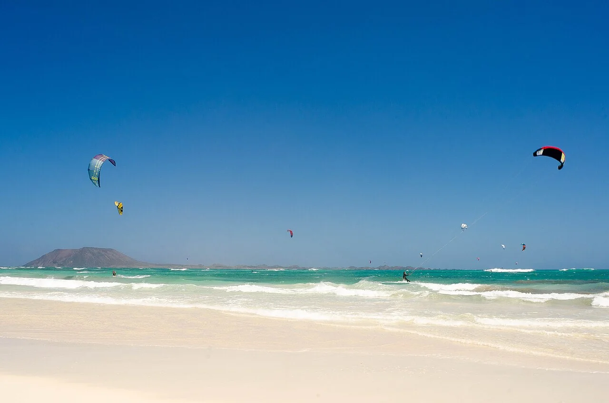

Grandes Playas — Corralejo
Fuerteventura, Canaries, Espagne · surf, kitesurf, windsurf, baignade

Succession de plages de sable blanc au pied de la plus grande zone de dunes des Canaries, dans le parc naturel de Corralejo, au sud de la ville, avec vue sur Lobos et Lanzarote. Selon The Surf Atlas, Flag Beach est le repaire des windsurfeurs, où le vent s’engouffre entre Fuerteventura et Lobos, et Playa del Moro donne de bons beach breaks quand une grosse houle de nord-ouest arrive. Beach Atlas note que la houle d’automne et d’hiver plaît aux surfeurs expérimentés.
- Lieu
- Fuerteventura, Canaries, Espagne
- Niveau
- Variable selon les conditions
- Activités
- surf, kitesurf, windsurf, baignade
- Type d'eau
- Mer / océan
- Coordonnées
- 28.72, -13.84 (position approximative du secteur)
Dangers à connaître
- La houle d’automne et d’hiver peut rendre la baignade déconseillée (Beach Atlas) : regarde les drapeaux avant d’entrer.
- Courants possibles à Playa del Moro, avertit The Surf Atlas.
- Flag Beach est très ventée : le vent hache les vagues et la plage se partage avec windsurfeurs et kitesurfeurs (The Surf Atlas).
Le conseil d'Ocean Buddy
Choisis ta plage selon le vent et la houle du jour, et regarde les drapeaux et la surveillance sur place : Beach Atlas rappelle qu’ils varient d’une plage à l’autre. En décembre et janvier, l’eau est fraîche : environ 20 °C puis 19 °C d’après Climats et Voyages.
Ouvrir dans Ocean Buddy Télécharger sur l'App Store
Source : Fiche Ocean Buddy · décembre 2026 · d’après Beach Atlas, The Surf Atlas, Wikipédia et Climats et Voyages · à vérifier localement.